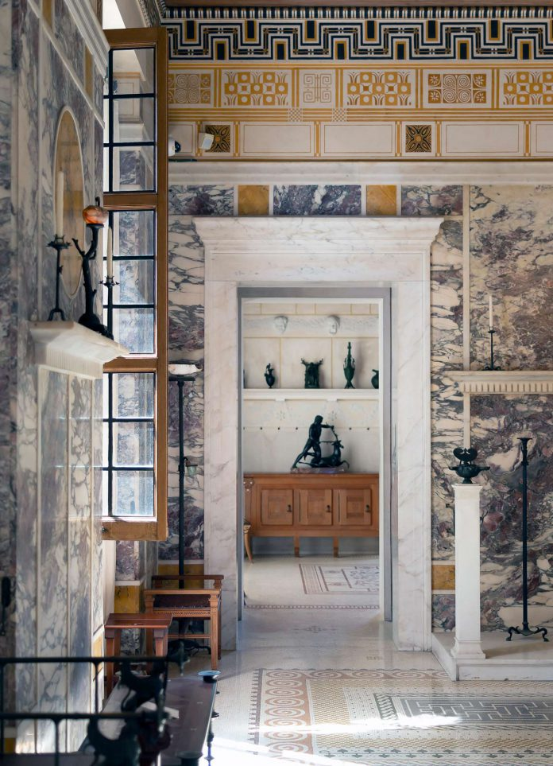
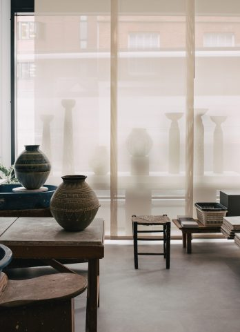
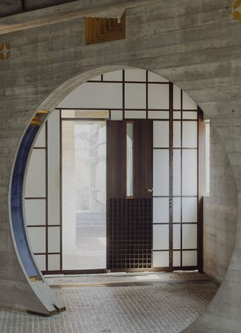

-
SEOUL
Korea Furniture Museum
The Korea Furniture Museum, a collection of furniture — or in some cases entire buildings — gathered from across Korea and reassembled onsite into 10 hanok structures.
-
ARCHITECTURE
PARIS
Logically, Frankly
The eponymous architect behind rue Mallet-Stevens carved out his own style of modernism. Hôtel Martel is the most faithfully preserved of the six villas on the historic street.
-
ARCHITECTURE
Revealing Space
A selection of songs for the autumn season.
-
Native Wood
In the heart of the Tyrolean Alps with Studio van der Zee, who create hand-made, solid wood furniture from native wood.
-
Georg Olden
A prolific graphic designer and advertising executive, Georg Olden designed the first statuette for the 1962 Clio Awards, now one of the most prestigious honours in the creative industry.
-
Spirituality in Design
A CONVERSATION WITH CHRISTOPHE DELCOURT
-
ARCHITECTURE
Rōzu
Inspired by Charlotte Perriand, Aēsop has created a fragrance called Rōzu, which captures the designer’s love of the mountains, pine trees, snow and fresh air.
-
ARCHITECTURE
A Local Legacy
Tracing Bath and Bristol’s ties to the transatlantic slave trade.
-
The Lovell Health House
A visit to The Lovell Health House by Richard Neutra, which has been preserved almost unchanged for over half a century.
-
ARCHITECTURE
MILAN
Villa Necchi Campiglio
An icon of Italian rationalism in Milan, designed and built by architect Piero Portaluppi.
-
Material Colour
Muller Van Severen’s functional yet sculptural design practice, at their home studio in Ghent.
-
Cube of Light
The Bauhaus at Dessau, and its legacy as an ever-relevant model for education.
-
Good Energy
Remembering the mid-century designer Achille Castiglioni, with his daughter, Giovanna Castiglioni, to mark the launch of his Bulbo57 design with FLOS.
-
Infinite Blue
Gio Ponti’s iconic hotel in Sorrento, Italy.
-

TRAVEL
FRANCE
Hellenic Spirit
A visit to Villa Kerylos on the French Riviera, modelled after 2nd century BCE homes of the Greek island of Delos.
-

UNITED KINGDOM
DESIGN
LONDON
Community Through Craft
A conversation with Studio Pottery London.
-
ITALY
Casa Mollino
A visit to the 19th century apartment by Italian architect and designer Carlo Mollino, located by the river Po in Turin, Italy.
-
PARTNERSHIP
Apollo: Purposeful Ease
Exploring Italian designer Antonio Citterio’s latest series, Apollo, designed for Maxalto.
-
ARCHITECTURE
Bauhaus in Bristol
How the Bauhaus architect and designer Marcel Breuer came to work in the city of Bristol, UK, constructing one of his most-prized buildings of his career in the process.
-
USA
Clay Studio
With Tung Chiang of Heath Ceramics.
-

ARCHITECTURE
ITALY
Impossible Beauty
Exploring the Brion Tomb, Carlo Scarpa’s final and perhaps most revered architectural work.